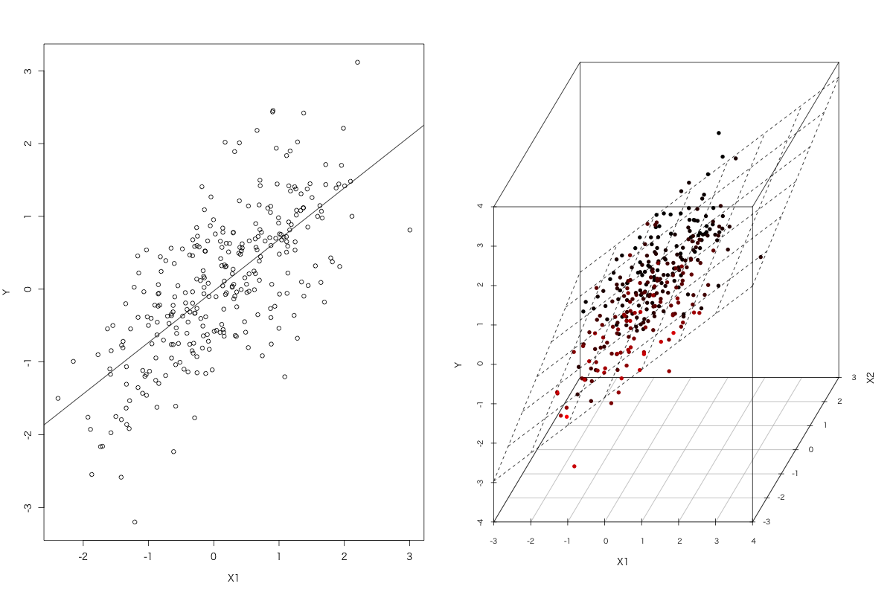
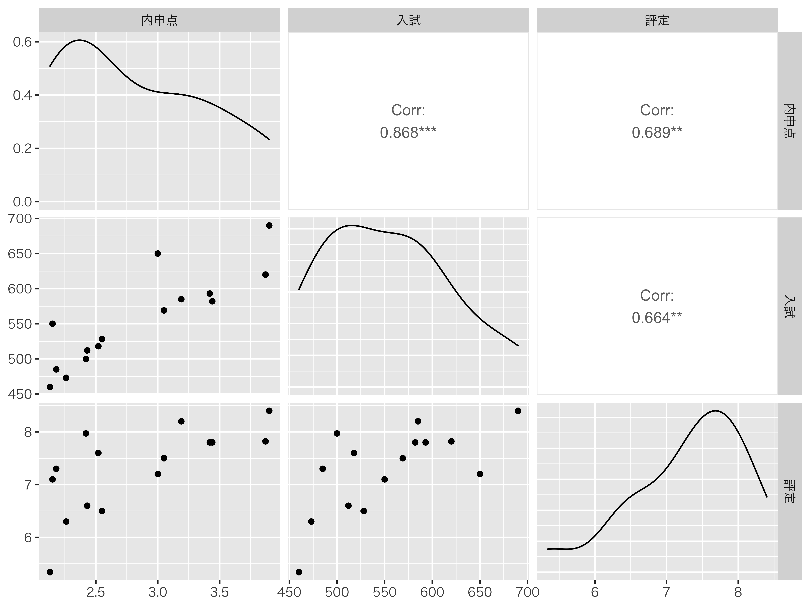
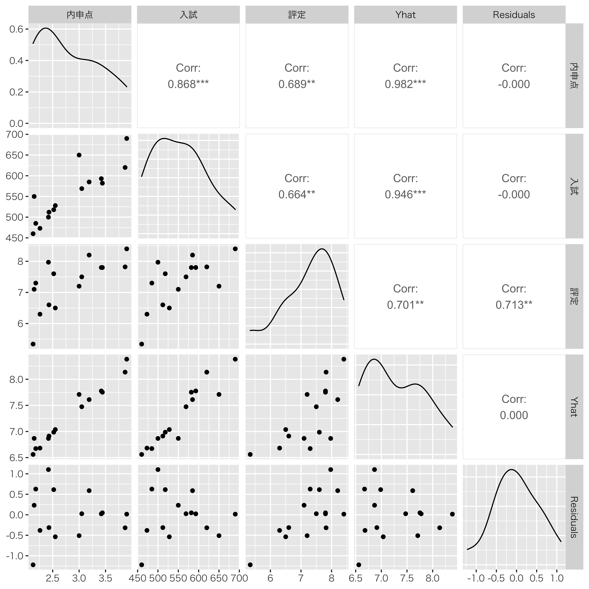
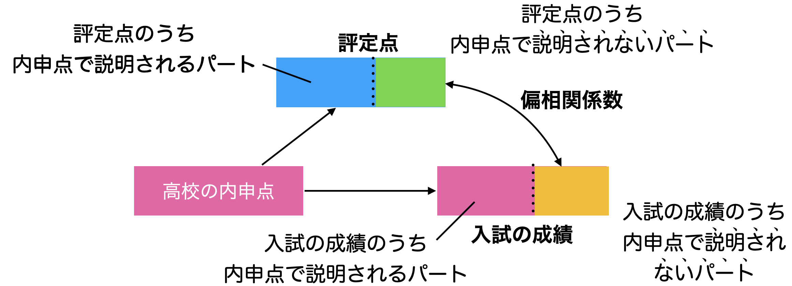
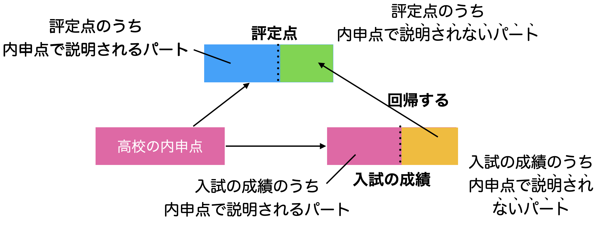
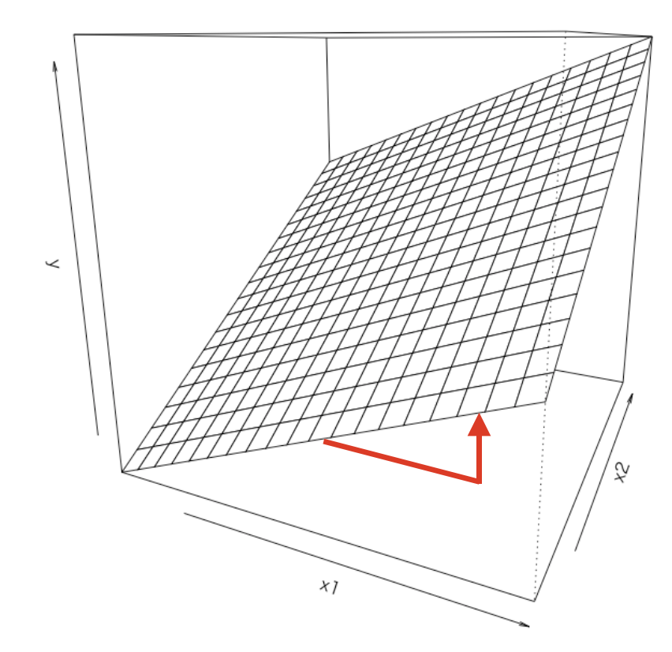
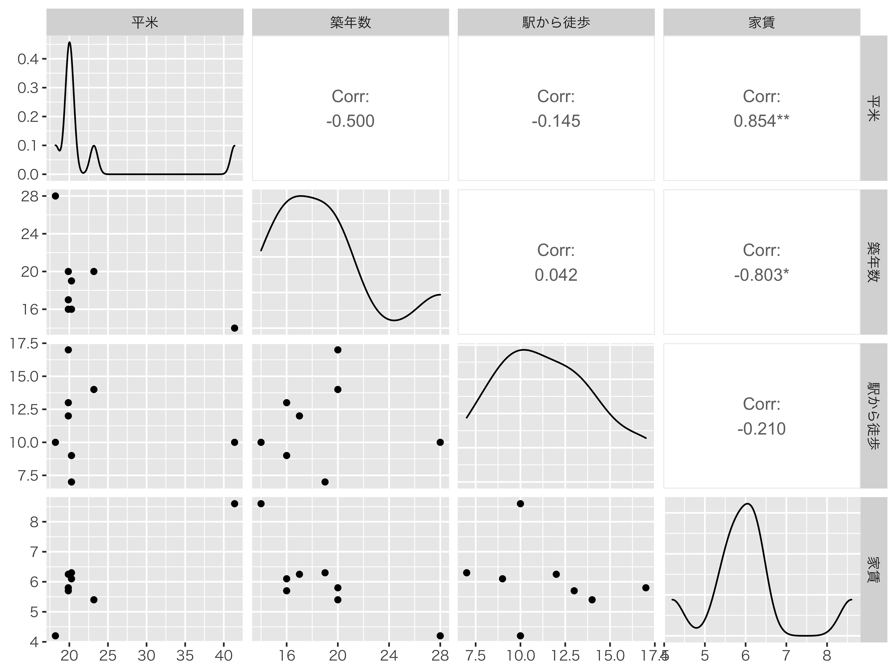

Chapter 2 重回帰分析
前回はというで，データの相関関係を元に予測モデルを作るということをしたのでした。予測と制御は科学の基本ですから，それができるとなったら素敵なことです。 ただし，我々が使うデータは人間を対象にしているので，誤差がたくさん含まれていますから理論モデルのようにぴったりフィットすることはありません。それでも大まかに線形関数が成り立つのであれば(直線の分布をしてそうならば)，有用なことは多いのだという話をしました。
今回は前回のモデルを少し複雑にしていきます。前回は\(y=b_0+b_1x\)で，説明される変数\(y\)にたいし説明する変数\(x\)がひとつだけ，という簡単なモデルでした。今回は説明する変数が2つ以上のモデルを考えます。
2.1 重回帰分析
説明変数が複数に増えた場合の回帰分析は，と言います9。説明変数が\(x_1,x_2\cdots x_m\)と増えますので，係数もそれに応じて\(b_1,b_2,\cdots,b_m\)とつきます。切片は\(b_0\)ひとつで変わりません。これを式で表すと次のようになります。
\[\hat{y_i}=b_0 + b_1x_{1i}+b_2x_{2i}+\cdots+b_mx_{mi}\]
説明変数に\(x_{mi}\)とありますが，これは\(m\)番目の変数についての\(i\)さんのデータということです。今示した式は予測値\(\hat{y}\)についての式ですが，実際にはこれに誤差\(e_i\)がついて実測値\(y_i\)になります。
\[y_i = \hat{y_i} + e_i = b_0 + b_1x_{1i}+b_2x_{2i}+\cdots+b_mx_{mi} + e_i\]
一般的に書くために\(x_m\)まで用意しましたが，例えば2変数であれば\(y_i = b_0 + b_1x_{1i}+b_2x_{2 i}+e_i\)となります。どこに\(i\)がついているか，どこについていないかといった細かいところまでしっかり確認してくださいね。
さて\(y=b_0 + b_1 x\)(あるいは懐かしい\(y=ax+b\)という形でもいいですが)のときは直線になるので線形モデルという話をしました。説明変数が2つあると，\(x_1\)の軸，\(x_2\)の軸と従属変数\(y\)の3つの軸からなる3D平面で図示することになります(図1.1)。説明変数が3つ以上になると図示することはできません。しかし，抽象的・数学的なモデルとしては何の問題もありません。また，平面になってもある側面から見れば直線になっていますから，説明変数が増えても一般的にあるいはという名称はかわりません。

立体でも線形モデル
説明変数の数が増えると，回帰係数を求める計算はより複雑になります。複雑になりますが，結局のところと同じ考え方，すなわち誤差(の分散)が最も小さくなるように係数を定めるという基準で係数を求めることができます10。具体的な計算式をここで示しません。Rを使えば単回帰分析と同じやり方で答えが出せる，ということだけ知っておいていただければ十分です。
具体的な数値例でみてみましょう。表1.1には表\[tbl09_01\]に一列追加したデータを用意しました。今度は大学のGPAつまり大学成績の平均値が入っています。高校の内申点，大学の入試の点数が，大学の評定平均に影響している，という考え方は十分あり得そうですね。
| 学生ID | 高校の内申点 | 大学入試の成績 | 大学のGPA |
|---|---|---|---|
| A | 2.13 | 460 | 5.34 |
| B | 2.42 | 500 | 7.97 |
| C | 2.26 | 473 | 6.30 |
| D | 3.87 | 620 | 7.82 |
| E | 3.90 | 690 | 8.40 |
| F | 2.43 | 512 | 6.60 |
| G | 3.44 | 582 | 7.80 |
| H | 2.15 | 550 | 7.10 |
| I | 2.18 | 485 | 7.30 |
| J | 3.00 | 650 | 7.20 |
| K | 3.42 | 593 | 7.80 |
| L | 2.55 | 528 | 6.50 |
| M | 3.19 | 585 | 8.20 |
| N | 3.05 | 569 | 7.50 |
| O | 2.52 | 518 | 7.60 |
\[tbl::10_01\]
このようなデータが得られたら，次にすることは，そう，可視化です。データは図にするが分析の基本だからです。

変数間関係の可視化
図1.2は\(3\times3\)の行列にならべてデータを可視化する方法です。行に内申点，成績，GPAが，列にも内申点，成績，GPAが入っています。左上から右下にかけての対角(セルの番地でいうとn行n列目)には，データの分布を表す図が入っています。左下のほうにあるのは，2つの変数ペアの散布図です。右上にあるのはその相関係数です。当然ながら，左下と右上には同じ情報が入っているのですが，これを可視化したものと数値化したものになっているのです。
このデータを見ると，3つの変数の間には十分相関がありそうです。特に，大学の評定平均値を従属変数と考えると，内申点と評定平均の相関が0.689，入試と評定平均の相関が0.664とあり，散布図を見てもどちらも左下から右上にかけての直線関係があるように見えます。そこで，評定平均を\(y\)，内申点を\(x_1\)，入試の成績を\(x_2\)と考えて重回帰分析を実行してみたとします。
Rでチョチョイと計算できるのですが，詳しくは次回に回すとして，結果として次のような回帰式が得られました。 \[\hat{y} = 3.761+0.604x_1+0.003x_2\]
つまり，内申点を0.604倍し，入試の成績を0.003倍したものに3.761を足せば大学の平均評定GPAの予測値になるのです。具体的に，例えば内申点が2点，入試の成績が500点の人であれば，この人は\(3.761+0.604\times2+0.003\times500=6.469\)ぐらいの成績を得るんじゃないの，ということがわかります。
また，仮想の値ではなく今回のデータを入れると，それぞれの予測値\(\hat{y}\)と，誤差の大きさが計算できます。
表1.2には予測値をYhat列に，誤差の大きさ(残差)をResiduals列に入れてみました。
予測値と実際の従属変数との相関係数が，モデルのを表す指標になるのでしたね。 その相関係数を二乗したを計算すると，今回は\(R^2=0.9418\) になります。入学後の成績の半分ぐらいは，入試と内申点で予測できるデータだったということができます。
| ID | 内申点 | 入試 | 評定 | Yhat | Residuals |
|---|---|---|---|---|---|
| A | 2.13 | 460 | 5.34 | 6.560388 | -1.2203875 |
| B | 2.42 | 500 | 7.97 | 6.866879 | 1.1031209 |
| C | 2.26 | 473 | 6.30 | 6.681601 | -0.3816011 |
| D | 3.87 | 620 | 7.82 | 8.136849 | -0.3168493 |
| E | 3.90 | 690 | 8.40 | 8.384655 | 0.0153447 |
| F | 2.43 | 512 | 6.60 | 6.912295 | -0.3122954 |
| G | 3.44 | 582 | 7.80 | 7.752318 | 0.0476824 |
| H | 2.15 | 550 | 7.10 | 6.867773 | 0.2322275 |
| I | 2.18 | 485 | 7.30 | 6.672630 | 0.6273699 |
| J | 3.00 | 650 | 7.20 | 7.709539 | -0.5095393 |
| K | 3.42 | 593 | 7.80 | 7.776324 | 0.0236764 |
| L | 2.55 | 528 | 6.50 | 7.037309 | -0.5373092 |
| M | 3.19 | 585 | 8.20 | 7.611085 | 0.5889147 |
| N | 3.05 | 569 | 7.50 | 7.473985 | 0.0260146 |
| O | 2.52 | 518 | 7.60 | 6.986369 | 0.6136308 |
\[tbl::10_02\]
重回帰分析は単回帰分析と変わらず，便利な使い方ができそうだ，ということがわかってきました。ただし，結果の解釈やそれを言葉にする時は，ちょっと注意が必要です。 まず言葉上の注意ですが，重回帰分析の回帰係数は特にといいます。「偏」という字がつくのですが，この一文字が曲者です。
単回帰の時，傾きを表す係数\(b_1\)は説明変数\(x_1\)が一単位上昇した時の，従属変数\(y\)の伸び率を表しているのでした。傾きってそういうことですよね。例えば前回の例で言えば，\(\hat{y}=288.74+93.72x\) でしたから，内申点が1点上がれば入試の成績は93上がるぞ，というようなことが言えたわけです。
今回は\(\hat{y}=3.764+0.604x_1+0.003x_2\)ですから，「内申点が1点上がればGPAは0.604上がるし，入試の点が1点上がればGPAは0.003上がるぞ」と言いたいところです。がちょっと注意して欲しいのは，「内申点が1点あがれば」「入試の点が1点上がれば」という言い方です。この2つは全く独立に効果が出ているようですが，図1.1を思い出せばわかるように，重回帰分析の場合の説明関数は面になっているということです。面の場合，\(x_1\)が1ポイント上がるというのは，\(x_1\)軸の方に水平移動するイメージですが，その時\(x_2\)は変化していません。\(x_2\)が1ポイントあがるというのは，\(x_2\)軸の方に水平移動するイメージですが，その時\(x_1\)は変化していないのです。
ところで，元のデータを図示した図1.2をみてください。内申点と入試の成績，つまり\(x_1\)と\(x_2\)の間には相関がありますね(\(r=0.868\))。ということは，\(x_1\)が動くと\(x_2\)もつられて動きます。データの空間上は斜めに動いているようなものです。であれば一概に，「内申点が1点上がれば・・・」ということはできません。重回帰分析の場合の回帰係数が表しているのは，「入試の点が同じであれば，内申点が1点上がれば0.604点上がる」という条件付きの係数だったのです。この点，注意が必要ですのでもう少し詳しく読みといていきましょう。
2.2 偏回帰係数

予測値や残差を含んだ散布図
お気づきでしょうか。これを見ると，相関係数がきれいに\(r=0.0\)になっている箇所がありますね。そうです，残差\(e_i\)と2つの説明変数\(x_1,x_2\)，および残差\(e\)と予測値\(\hat{y}\)のところがゼロです。これは今回たまたまそうなったというのではなく，原理的にこのようになることが証明できます11。これがどういう意味を持つのか考えていきます。
まず残差と説明変数の相関がないことについて。被説明変数\(y\)を説明変数\(x_1\)で回帰すると，この変数で説明できるパートとできないパートに分割できます(図1.4)。説明できないパートが残差\(e\)となって取り出されているわけです。ここで\(x_1\)と\(e\)に相関関係が残っているようであれば，回帰分析の改良の余地があるということになってしまいます。回帰係数は今回のデータにベストフィットするように選ばれているはずなので，原理的にここには相関があるはずないのです。図1.4にそのイメージを描いてみました。
回帰分析は説明変数を分割する
さて，この説明変数\(x_1\)で説明できなかった残りの部分と，もう1つの説明変数\(x_2\)について相関係数を計算できます。この相関係数のことを特にといいます。図1.6のイメージ図をみてもらったらわかりやすいと思います。
部分相関係数
これは被説明変数\(y\)である「大学での評定平均点」を，第一の説明変数\(x_1\)である「高校での内申点」で統制した，「大学入試得点」(\(x_2\))との部分相関係数，というように言います。統制したというのは，その変数でコントロールした，あるいはその変数の影響を除外した，という意味だと思ってください。なぜ影響を除外したと言えるかというと，内申点(\(x_1\))で説明できるところは説明し尽くした残りとの相関を見ているわけですから，「説明し尽くした」＝「その変数の影響を除外した」と解釈できるからです。
さらに，第一の説明変数\(x_1\)をつかって，第二の説明変数\(x_2\)を従属変数とした回帰分析をしたとします。そうすると，その残差は\(x_2\)の中からも\(x_1\)の影響を取り除いたものだ，ということができます。このように，内申点\(x_1\)をつかって，入試の点\(x_2\)と評定点\(y\)両方を回帰分析し，それぞれの残差の相関を求めたものをと言います。両方からある変数の影響力を取り除いた，偏りのない相関係数という意味です。図1.6にそのイメージ図を描いてみました。

偏相関係数
入試の成績にも，大学での評定点にも共通の「高校時代の成績」といった要因がある，と考えることができますね。つまり「入試の成績と大学での成績を純粋に比較したい」というときであっても，背後の変数の影響がどうしても残ってしまっています。 でもこの方法を使うと，背後の変数の影響を取り除いた純粋な「入試の成績と大学での成績」の関係を見ることができるようになります。これはすごいことなのです。例えば，大学での評定平均値は他に何で予測できるだろうか，ということを考えたとします。それに影響してくる要素の候補として，例えば通学にかかる時間だとか，その学生がアルバイトしているかどうか，サークルに入っているかどうか，あるいはこれまで塾に通ってきたかどうか，ひいては親の収入が高かったかどうか，兄弟姉妹の数が何人か・・・などなど，考えなければいけないことは山のように出てくるでしょう。しかもこういった情報は，調査の段階で統制できるものではありません。アルバイトしているかどうかで勉強につい痩せる時間が違うな，と思っても，アルバイトしている人だけ回答者を募集したり，していない人だけ募集したり，というのではコストも大変です。実験的には統制できることでも，調査の実際を考えると統制すべき変数が多すぎて制御しきれないのです。
しかしここで，考えうる諸般の事情をデータ化して回帰分析を行い，その評定平均の残差を使うことにすると，それは諸般の事情が取り除かれたものとして扱うことができます。残差を研究することで，統制できないけどいろいろ考えなければならない効果からの影響を，綺麗に取り除ことができるともいえるのです！表1.2のResidualsの列には，2つの説明変数の影響を取り除いた大学での評定平均点情報が入っています。内申点や入試の点は人それぞれ違いますが，それらの影響を取り除いて，評定平均点はどういう違いがあるのかな，ということを考えることができるのです。
さらに，ここでは\(x_1\)で統制された\(y\)と\(x_2\)との相関関係を求めましたが，\(x_1\)で\(x_2\)を統制した残差をつかって，\(y\)を回帰することもできます(図1.7)。実はこれが重回帰分析の時に計算されている，回帰係数になっているのです。

偏回帰係数
重回帰分析の回帰係数は特に，といいます。偏という字がついているのは，相互に影響を取り除いたという意味です。前の節の最後に，回帰係数の意味は\(x_1,x_2\)それぞれの軸に沿った水平移動をした時の上昇率だ，ということを伝えました(図1.8)。ここで\(x_1\)の係数を解釈するときには，\(x_2\)が統制されている(\(x_2\)は変化していない)ことに注意が必要です。言葉で表現するのは難しいのですが，丁寧にいうなら「入試の成績(\(x_2\))が同じだとすると，内申点(\(x_1\))が1点上がることに入学後の成績(\(y\))は0.604点あがる」が正しい表現ということになります。

偏回帰係数が表す値の意味
「なんかややこしいなあ」「何がダメなのかわかりにくい」という人もいるかと思いますので，別の例で考えてみます。 大学の成績\(y\)を予測するのに，今度はサークルにかける時間\(x_1\)とバイトにかける時間\(x_2\)をというデータを集めたとします12。 まず，それぞれの変数で単回帰分析をしてみました。 \[\hat{y} = 2.8743 + 0.1407 x_1\] \[\hat{y} = 15.4221 -0.5443 x_2\] なるほど，サークルをすると成績が上がる(+0.1407)のですが，バイトをすると成績が下がる(-0.5443)ようだ，という解釈ができるかと思います。
しかしここで重回帰分析をしてみます。2つの変数を同時に予測方程式の中に入れるのです。 \[\hat{y} = 21.9910 -0.1209 x_1 - 0.5956x_2\] おや，どちらの係数もマイナスになってしまいました。サークルをすると成績が下がるし，バイトをしても成績が下がるという結果です。サークル活動はいいんじゃなかったっけ？ なぜこのような逆転現象が起きたのでしょうか。
実は，このデータは\(x_1\)と\(x_2\)の間に相関関係があったのです(\(r_{12}=-0.4360\))。サークル活動をしているとバイトしている暇がない，あるいはその逆でしょうか。いずれにせよ負の相関があることをこのように解釈できます。 また，被説明変数との相関は，\(r_{y1}=0.1421,r_{y2}=-0.5529\)のようになっています。これは単回帰分析の結果と同じ傾向をしていますね。サークルに費やす時間が多い人は成績が高い，バイトの時間が長い人は成績が低い，ということがあるようです。 しかし注意が必要なのは，このように\(x_1 \to y\)，\(x_2 \to y\)という直接的な関係には，実は見えない影響が混ざっていることです。今回は\(x_1\)と\(x_2\)に関係がありますから，\(x_1 \to x_2 \to y\)という影響力のルートがあるのです。これをといいます。
重回帰分析は間接効果を統制した影響を示してくれています。「サークル活動時間が多ければ成績が下がり，バイトにかける時間が多くても成績が下がる」というのではなく，「バイトにかける時間が同じであれば，サークル活動時間が多ければ成績が下がる」「サークル活動時間が同じであれば，バイトにかける時間が多いと成績は下がる」というのが正しいのです。両方が独立しているような，並列的な結論を書くのではなく，条件付きで解釈する必要があります。 また，もちろん，バイト時間のことを調べていなければ，「サークルはいいよ，成績も上がることがデータで示されているよ」という結論を出してしまうかもしれません。分析する時は，被説明変数に影響しそうな変数は網羅的に考えておかないと，間違った結論をみちびいてしまうのです。
先ほど見たように，単純な相関係数\(r_{y1}\)は，統制された直接的な影響(偏相関係数)と，間接効果が入り混じったものになっているので，しっかり統制して評価しなければなりません。重回帰分析の結果を解釈するときは，その表現も注意しなければならないことがおわかりいただけましたでしょうか。
また，説明変数間に強い相関関係があるときは，重回帰分析の結果そのものが不正確なものになることがあります。この問題を特にの問題といいます。仮に\(x_1\)と\(x_2\)が\(r_{12}=0.9\)とか\(1.0\)に近いような，かなり相関が強い関係にあったとしましょう。 \(x_1 \simeq x_2\)といってもいいような感じです。仮に\(x_2\)を\(x_1\)に置き換えてみたとすると，回帰式は次のようになります。 \[\hat{y} = b_0 + b_1 x_1 + b_2x_2\] \[\hat{y} = b_0 + b_1 x_1 + b_2x_1\] \[\hat{y} = b_0 + (b_1+b_2) x_1\] 最後の式は，単回帰分析と同じ形になっていますね。単回帰分析の係数は1つだけですからある係数\(b_s = b_1 + b_2\)を満たす\(b_1,b_2\)のペアは無数に考えられます。解が定まらないのです。実際は\(x_1=x_2\)と置き換えられるほどのことはないでしょうが，かなり相関が高いと同じようなことが起こります。が生じると，結果的に回帰係数の符号が真の関係と逆になって出てくるなど，正しく答えが出てこない問題が生じます。
このように，説明変数間に相関関係がある場合は特にいろいろ注意しなければなりません。説明変数同士の相関がないときに用いると重回帰分析は大変シンプルなのですが，実際はそういうことばかりではありません。解釈や多重共線性に注意するためにも，得られたデータはまず可視化して，説明変数同士に相関関係があるかどうかをチェックするようにするといいでしょう。
2.3 標準化された係数
さて，話は戻って大学の評定平均値\(y\)を，高校の内申点\(x_1\)と入試成績\(x_2\)で予測する回帰式をもう一度確認したいと思います。
\[\hat{y} = 3.761+0.604x_1+0.003x_2\]
これを見ると，高校の内申点の回帰係数が0.604，入試の成績の回帰係数が0.003です。この2つの数字を見ると，入試の成績がずいぶん小さいですね。高校の内申点は入試の成績の200倍も重要なのでしょうか？ いえ，そうではありません。今回の場合，従属変数は最小値が5.340，最大値が8.385です。説明変数はこの従属変数に合うように伸ばしたり(係数をかける)ずらしたり(切片を足す)するわけです。内申点は最小値が2.13，最大値が3.90ですから5–8ぐらいの幅に合わせるためには等倍ぐらいの伸ばし方でいいのですが，入試の成績は最小値が460，最大値は690にも及びます。これを5–8ぐらいの，一桁の数字にするためにはまず1/100ぐらいにスケールダウンしないとどうしようもないですね。ということで，\(x_2\)の係数は小数点以下の小さな数字になっているのです。
このように，ロウデータ13を使った表現では，単位が違うということになりますから，そのまま偏回帰係数を比較して，こちらの影響力が大きかった，という判断をできません。ではどうすればよいのでしょうか。単位が異なるから相対比較できない，ということだったので，単位がなくなれば相対比較できるようになるわけです。そう，このような操作をというのでしたね。
説明変数も従属変数も単位がついていますから，これらを整えるためにそれぞれの変数を標準化します。標準化したデータセットは表1.3のようになります。
| ID | 内申点z | 入試z | 評定z |
|---|---|---|---|
| A | -1.1382198 | -1.4131716 | -2.3874746 |
| B | -0.6693508 | -0.8139469 | 0.8237724 |
| C | -0.9280371 | -1.2184236 | -1.2153084 |
| D | 1.6749939 | 0.9837272 | 0.6406214 |
| N | 0.3492265 | 0.2197157 | 0.2498993 |
| \(\vdots\) | \(\vdots\) | \(\vdots\) | \(\vdots\) |
| O | -0.5076719 | -0.5442958 | 0.3720000 |
\[tbl::10_03\]
この標準化されたデータセットは，各変数平均が0分散が1となっており，このままで相対比較が可能です。これを使って回帰分析を行うと，結果は次のようになります。
\[\hat{y.z_i} = 0.4564 x.z_{1i} + 0.2674 x.z_{2i}\]
標準化された内申点の回帰係数は0.4564，標準化された入試点数の回帰係数は0.2674でした。これを比較して，内申点のほうが入試よりも影響力が大きい，と適切に判断することが可能です。このように各変数を標準化して算出した偏回帰係数のことをといいます。長い名称ですが，意味を考えると理解できると思います。標準化偏回帰係数は，\(x_2\)の得点が同じとすると\(x_1\)が1SD上昇するときに従属変数がどれぐらい変化するか，を表している係数になります。解釈はちょっとストレートではないですね。標準化しない回帰係数は単位がついていたので理解はしやすいが比較が難しい，標準化した回帰係数は単位がないので理解はしにくいけど比較がしやすい，ということです。
さて標準化したスコアで回帰分析した時の特徴をあと2つほど指摘しておきましょう。 まずは切片\(b_0\)の値がないことです。気づきましたでしょうか。切片項は変数全体の高さ調整に使われるものであり，各変数の平均値を加味して計算されるものだったわけですが，標準化したデータを使った場合全ての変数の平均が0になっていますから，この調整が必要なくなったわけです。ということで標準化した回帰分析のばあいは切片がないのも当然なのです。 もうひとつ，モデル適合について考えてみます。実は，標準化しない時の\(R^2\)値と標準化した時の\(R^2\)値は同じです。データが標準化されていようがされていまいが，線形モデルの当てはめをする上で変数間関係(相関関係)が変わるわけではありません。位置とか幅が違うだけであり，散布図の見た目が変わるわけではないのです。考えてみれば当たり前のことなのですが，改めて確認しておくといいでしょう。
2.4 今日のまとめ
説明変数が複数になった回帰分析を重回帰分析という。そのときの回帰係数は偏回帰係数という。
偏回帰係数は「他の変数を統制したときの」回帰係数である，ということに注意。部分相関係数，偏相関係数，偏回帰係数の順に理解していこう。
説明変数が複数ある場合は単位がそれぞれ異なるので，影響力同士を比較するには標準化偏回帰係数をつかう。
2.5 課題
大学周辺のワンルームマンションの相場を調べるため，8件ほどの物件のデータを集めてみました(表1.4，図1.9)。これをもとに，家賃を従属変数とし，広さ広さ，築年数，最寄りの交通機関からの移動時間を独立変数とした重回帰分析を行いました。
| 平米 | 築年数 | 駅から徒歩 | 家賃 |
|---|---|---|---|
| 41.40 | 14 | 10 | 8.60 |
| 20.28 | 16 | 9 | 6.10 |
| 18.20 | 28 | 10 | 4.20 |
| 19.87 | 16 | 13 | 5.70 |
| 20.28 | 19 | 7 | 6.30 |
| 23.18 | 20 | 14 | 5.40 |
| 19.87 | 17 | 12 | 6.25 |
| 19.87 | 20 | 17 | 5.80 |

サンプルデータのプロット
ロウデータの重回帰式は， \[\mbox{予測値} ＝ 7.05 + 0.09\mbox{平米} - 0.14\mbox{築年数} - 0.04\mbox{移動時間}\]
となり，すべてのデータを変数ごとに標準化したデータの重回帰式は \[\mbox{予測値} ＝ 0.58\mbox{平米} - 0.51\mbox{築年数} - 0.10\mbox{移動時間}\]
となりました。また，適合度指標は\(R^2 = 0.93\)になりました。
このデータや結果を踏まえて，次の設問に答えてください。
2.5.0.0.1 重回帰分析の結果を読み取る1
ロウデータの回帰分析とその結果について，正しい表現をしているものすべてにチェックを入れてください。
切片は7.05である
移動時間が同じ物件であれば，築年数が1年長いと家賃が1400円低い
家賃を決めるのに最も重要な変数は，回帰分析からはわからない
家賃を決めるのに最も重要な変数は，係数の絶対値が一番大きい築年数である。
家賃を決めるのに最も重要な変数は，係数が正の平米である。
移動時間と築年数が同じ物件であれば，1平米広くなると家賃が900円高い
築年数が1年増えると家賃が1400円下がる
従属変数である家賃と平米，あるいは家賃と築年数の相関係数が高いため，多重共線性が生じている可能性を疑うべきである。
2.5.0.0.2 重回帰分析の結果を読み取る2
標準化されたデータの回帰分析とその結果について，正しい表現をしているものすべてにチェックを入れてください。
移動時間と築年数が同じ物件であれば，1平米広くなると家賃が5800円高い。
家賃を決めるのに最も重要な変数は，回帰分析からはわからない。
家賃を決めるのに最も重要な変数は，係数の絶対値が一番大きい平米である。
切片は記載されていないので，分析結果が解釈できない。
家賃を決めるに最も重要な変数は，係数が正の平米である。
移動時間が同じ物件であれば，築年数が1年長いと家賃が5600円低い。
標準化されたデータの散布図が描かれていないので，分析に進むのは良くない。
説明変数が平米だけの回帰分析より，平米と築年数の2変数を使った回帰分析の方が，また平米と築年数の回帰分析より，平米と築年数と駅からの時間の3変数を使った回帰分析の方が，適合度R二乗は大きくなる
もう1つは「説明する」です。↩︎
なんで\(b\)なんだ\(a\)でもいいじゃないか，と言われたら返す言葉もないのですが，慣例的に\(b\)で係数を表しています。ちなみに今はアルファベットの\(b\)ですが，後期になると\(b\)のギリシア文字\(\beta\)に変わります。ギリシア文字で表現するのは推測統計学的な推定に関わるようになってからです。↩︎
親の身長から子供の身長を予測することを考えてみてください。次にその子が親になって，その子がまた親になって・・・という時に，「背の高い親からは背の高い子しかうまれない」というルールであれば，世界はものすごく高身長なひとと低身長な人に二分されてしまいます。そうではないということは，背の高い親から背の低い子が生まれることもあるし，その逆もあるということです。また野球選手などでルーキーのときは成績がいいのに，2年目になったら成績が下がる，というのは2年目のジンクスなどといわれますが，その人の平均的な能力以上のスコアが出た次の年に，平均的な値に帰るために低くなりがちなことは，当然ありえることでもあるのです。こうした効果のことを回帰効果といいます。↩︎
細かい計算式については，(kosugi2018のPp.133をみてください?)。↩︎
指数についてこれまで習ったことを思い出してください。\(a\neq 0\)のとき，\(a^0=1\)ですし，\(a^{-n}=\frac{1}{a^2}\)と定義するのでした。↩︎